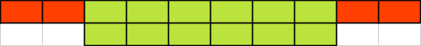
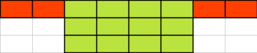
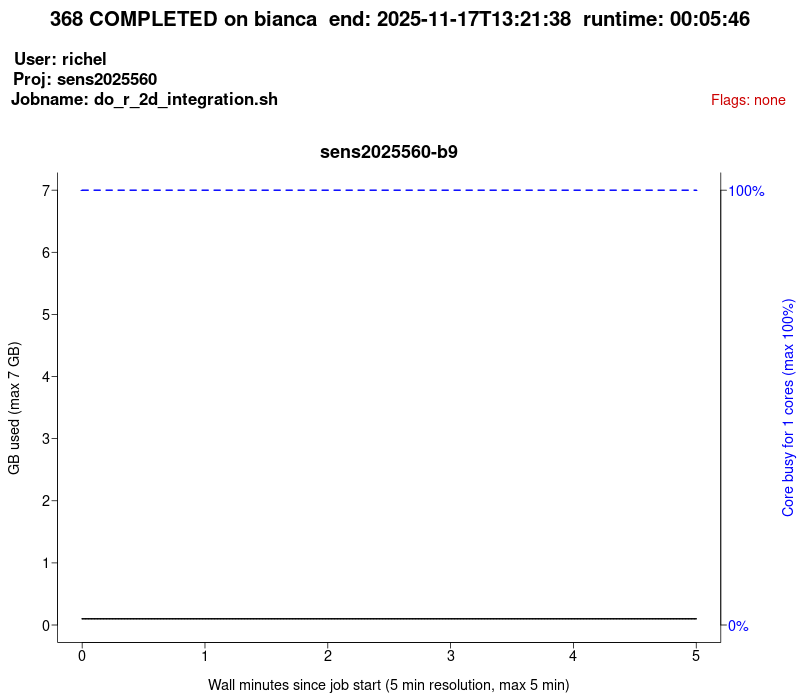

Efficient jobs¶
Learning outcomes
- Practice using the UPPMAX documentation
- I can see the CPU and memory usage of jobs
- I can read a
jobstatsplot - I can create a
jobstatsplot - I understand how to set up jobs efficiently
Want to see this session as a video?
Watch the YouTube video 'Intermediate Bianca workshop: efficient jobs'.
For teachers
Teaching goals are:
- Learners have practiced using the UPPMAX documentation
- Learners have seen the CPU and memory usage of jobs
- Learners have read a
jobstatsplot - Learners have created a
jobstatsplot - Learners have discussed how to set up jobs efficiently
Lesson plan:
gantt
title Efficient jobs
dateFormat X
axisFormat %s
section First hour
Course introduction: done, course_intro, 0, 10s
Prior : intro, after course_intro, 5s
Present: theory_1, after intro, 5s
Challenge: crit, exercise_1, after theory_1, 40s
Break: crit, milestone, after exercise_1
section Second hour
Challenge: crit, exercise_2, 0, 10s
Feedback: feedback_2, after exercise_2, 10s
SLURM: done, slurm, after feedback_2, 25s
Break: done, milestone, after slurmPrior questions:
- How to schedule jobs efficiently?
- What is the
jobstatstool?
Present:
- ?Show documentation
Why?¶
Quote from the UPPMAX documentation
If everyone would use our computational resources effectively, there would be no queue.
From the UPPMAX documentation, original source unknown
Running efficient jobs allows you to run more jobs that start running faster.
What are efficient jobs?¶
Here we define an efficient job as a job that makes good use of memory and processing power.
Each core you book gives both memory and processing power.
What is the relation between node, CPU and core again?
Here is a simplified picture of HPC cluster architecture:
flowchart TD
subgraph hpc_cluster[HPC cluster]
subgraph node_1[Node]
subgraph cpu_1_1[CPU]
core_1_1_1[Core]
end
end
end| Term | What it loosely is | Amount |
|---|---|---|
| Core | Something that does a calculation | One or more per CPU |
| CPU | A collection of cores that share the same memory | One or more per node |
| Node | A collection of CPUs that share the same memory | One or more per HPC cluster |
| HPC cluster | A collection of nodes | One or more per universe |
The universe [1] |
A collection of HPC clusters | One |
[1]this is a pun to distributed parallelism
Booking too many cores for memory is a reasonable thing to do¶
Memory is the most important resource of the two: if you schedule too little memory, your calculation will crash. This is worse than that your calculation will take longer. You have already found out how much memory your calculations need by trial-and-error :-) . You have probably been pragmatic and booked too much cores, just to make sure that it works: which is fine! In this session, we'll visualize how much cores you actually need to book, so that you can confidently book less cores per job, so that you can do more calculations that will start faster!
Here is a visualisation of a user that booked too many cores:

Booking more cores for quicker calculation speed may be useless¶
Programs can sometimes use multiple cores to speed up its calculation. The idea is to let multiple cores each do their own part of the total calculation. Such programs are called 'programs that allow parallel computation'. In this session, I call these multithreaded programs (a simplification that is not entirely technically correct). Where multithreaded programs can use multiple cores, singlethreaded program cannot. For singlethreaded programs, booking more cores to speed up the calculation is useless.
There are multiple ways to find out if a program can use multiple cores:
- Measure the number of cores used during a calculation (which is what we will do in this session)
- Read the documentation of the program
- Measure the speed increase by using multiple cores. This is called benchmarking. When a benchmark shows that there is no speed increase for multiple cores, it can be concluded that the program cannot use multiple cores.
Here is a visualisation of a user that booked multiple cores for a singlethreaded program:

Booking more cores for quicker calculation speed may be wasteful¶
The most efficient use of core hours is having 1 core working on a calculation:
- The 1 core never needs to ask other cores if they are done
- The 1 core is never waiting for other cores to finish
If we book more cores to work on the same calculation there is overhead:
- The main core need to ask other cores if they are done
- Some cores need to wait for other cores to finish their part of the calculation
Overhead is wasted resources, hence you want to have overhead for the right reasons. Good reasons are:
- You are in a hurry, so you need the calculation to go faster
- Your calculation takes 11 days, where Bianca allows jobs of maximimal 10 days. Instead of dealing with an interruption, booking an extra core may solve the problem
When booking more cores -say twice as much- your program will not go twice as fast. Below is a table of a worked-out example giving some numbers:
| Program runtime | Number of cores | Time | Speedup | Efficiency |
|---|---|---|---|---|
 |
1 | 16 | 100% | 100% |
|  | 2 | 10 | 160% | 80% |
|  | 3 | 8 | 200% | 60% |
 |
4 | 7 | 229% | 48% |
 |
6 | 6 | 267% | 33% |
| . | 12 | 5 | 320% | 18% |
| . | 24 | 4.5 | 356% | 9% |
| . | 48 | 4.25 | 376% | 5% |
The details behind this table can be found at the 'Parallel computing' session of the R-MATLAB-Julia course.
Exercises¶
Exercise 1: use cases¶
Question 1¶
For your research project, you need to run a lot of calculations. Each calculation takes 10 hours. How do you make optimal use of your computational resources?
Answer
Run the calculation on a single core for 100% efficiency
Question 2¶
For your research project, you also have a calculation that takes 11 days. Your HPC cluster allows a calculation of at most 10 days. Assume your HPC center will not extend your job (they will probably do so when asked: we are there to help!). How do you make optimal use of your computational resources?
Answer
If your calculation already has parallelism built-in, then run the calculation on two cores: this only involves changing your Slurm script, with a low loss of computational resources.
If you are a really tight on computational resources, you can implement a 'save state' in your calculation, so that you can schedule two runs of nine days in succession, each with 100% efficiency.
Alternatively, you can added thread parallelism to allow running with multiple cores.
Question 3¶
Your colleague runs many jobs with a lot of cores. 'It is way faster!', he/she states. That same colleague, however, also complains about long waiting times before his/her jobs start. How would you explain this situation?
Answer
The colleague used up (or: 'wasted') all his/her computational resources (commonly 10,000 core hours per month on UPPMAX).
Due to this, his/her jobs are only run when the HPC cluster has a low workload and activates the so-called 'bonus queue' (UPPMAX) or generally have to wait for their priority to go up again.
Question 4¶
Your colleague needs to finish his/her analysis quickly and starts scheduling multiple cores for his/her jobs. After some measurements, he/she concludes that the calculation does not finish faster at all. How would you explain this situation? What would you advise him/her?
Answer
The colleague is trying to run a singlethreaded calculation, i.e. a calculation that cannot use multiple cores.
You should advise to go back to scheduling single-core jobs directly, to prevent his/her jobs from being in the queue longer.
Question 5¶
You are using a program that is known to be single-threaded. You does not want to schedule more cores than needed. However, you know that you need to schedule 10 cores for the program to run at all. Is there a way you can use your computational resources more efficiently?
Answer
No.
If you need 10 cores for the memory it provides, than that is what is needed.
Sure, 9 core are not helping with the calculation at all, which is acceptable here.
Question 6¶
For years, you have been using a pipeline with multiple steps that use different tools. Some of these tools recommend to use 16 cores, so you have booked 16 cores for the whole process.
Due to this session, you decided to measure the job statistics of this job and you find the following graph:

After seeing this graph, how much course will you book in the future?
Answer
If you want to make best use of your core hours, use 1 core: the calculation takes around 130 minutes by 16 cores. Assuming that on average 8 cores are actually doing work, this calculation will then take 130 minutes * 8 cores less = 1040 minutes for 1 core = around 18 hours.
If you want to be a bit faster, use between 2-8 cores, as the calculation uses 8 cores on average. Using 8 cores here is reasonable use.
Exercise 2: creating a jobstats plot¶
We are going to create a jobstats plot. For that, we need a job
to plot. Here we first look for a job, after which we plot it.
- Scan the UPPMAX
finishedjobinfodocumentation - Log in to your own Bianca project where you have had a run of at least 1 hour
- Find a job that has finished successfully that took longer than one hour (if there is none, use the job the ran longest)
Answer
From the UPPMAX finishedjobinfo documentation,
here is a code snippet to find jobs that have completed and took longer
than an hour:
If there is no job that is long enough, use:
Look for a job that has a high runtime value, such as the one below.
The runtime must be above 5 minutes for this to work.
2025-11-17 13:21:38 jobid=368 jobstate=COMPLETED username=richel account=sens2025560 nodes=sens2025560-b9 procs=1 partition=core qos=normal jobname=do_r_2d_integration.sh maxmemory_in_GiB=0.1 maxmemory_node=sens2025560-b9 timelimit=02:00:00 submit_time=2025-11-17T13:15:31 start_time=2025-11-17T13:15:52 end_time=2025-11-17T13:21:38 runtime=00:05:46 margin=01:54:14 queuetime=00:00:21
Press CTRL-C to stop the process: it will take very long to finish.
- Read the UPPMAX
jobstatsdocumentation, create ajobstatsplot of that job
jobstatshas created a plot and saved it as filebianca-[project_name]-[username]-[job_id].png, for example,bianca-sens2025560-sven-368.png. Download thejobstatsplot and view it.
Answer
Here is an example plot:

- Was that a job that was set up well? If not, how should it be setup? Why?
Answer
We don't know. The user uses all CPU power perfectly and there is enough memory available.
The user may benefit from more CPUs, as the program may be CPU limited.
It may be that the program used is designed to use all the scheduled cores maximally, hence scheduling that amount of cores is perfect!
It may be that using less cores is a strategy of the user: using multiple cores always brings computational overhead and hence wasted CPU resources.
- Does the quote at the start of this sessions ('If everyone would use our computational resources effectively, there would be no queue') apply to the job you just investigated?
Answer
No.
How was the example plot generated?
Using the benchmark script from the R-Julia-MATLAB course, session 'thread parallelism'.